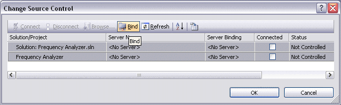
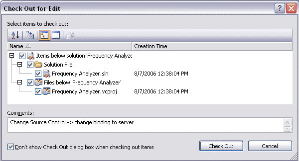
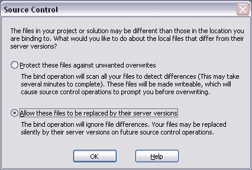
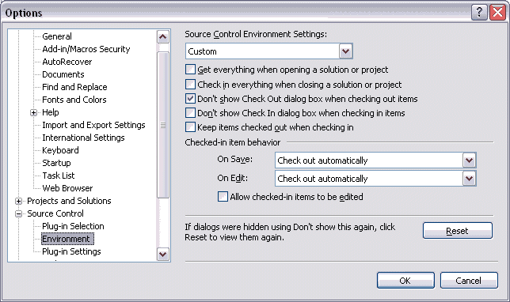
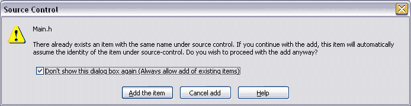
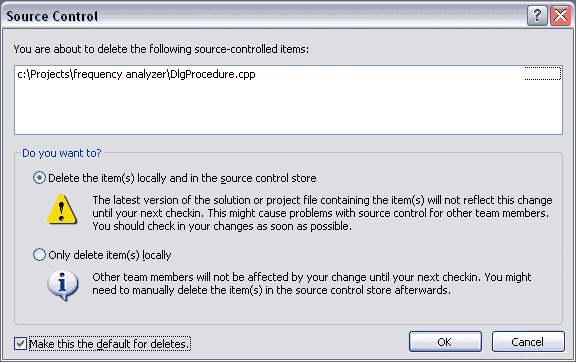
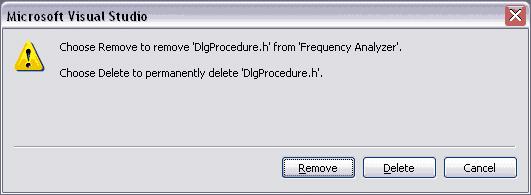
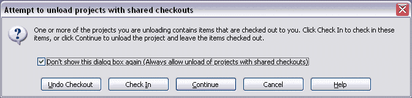

If you already have a Code Co-op project that is also a Visual Studio solution and you want to tell Visual Studio to use Code Co-op to check files out for you, follow these instructions. In Visual Studio:

By default, at this point, VS will ask you if you want to check out your .sln and .vcproj files. You don't want VS to be asking you these questions again, so check the "Don't show Check Out ..." checkbox at the lower left corner and select "Check Out".

Then VS will ask you if you want to protect your files from the source control overwriting them. Select "Allow these files to be replaced...". The alternative option makes sense only for server-based source-control systems.

At this point, VS will check out and modify your .sln and .vcproj files. Open the Code Co-op project and check those files in.
The major advantage of integration is that VS will be able to check files out as soon as you start editing them. To make your work flow smooth, you probably don't want VS to keep asking you whether you want to check a file out every time.
To set this up go to Tools > Options in VS and do the following:

Visual Studio will initially keep asking various questions, which usually have the "Don't show this again..." checkboxes. For instance:

Right-click on a file in the Solution Explorer and selects Exclude From Project command from the context menu.
Recommended action: the dialog is self-explanatory

Select a file in the Solution Explorer and press Delete button or rRight-click on a file in the Solution Exploror and select Remove command from the context menu.
Recommended action: Doesn't matter. In both cases the file is removed from Code Co-op project.

This happens usually when the project file has changed outside of VS and the project is reloaded. The user should check the checkbox and select Continue.
